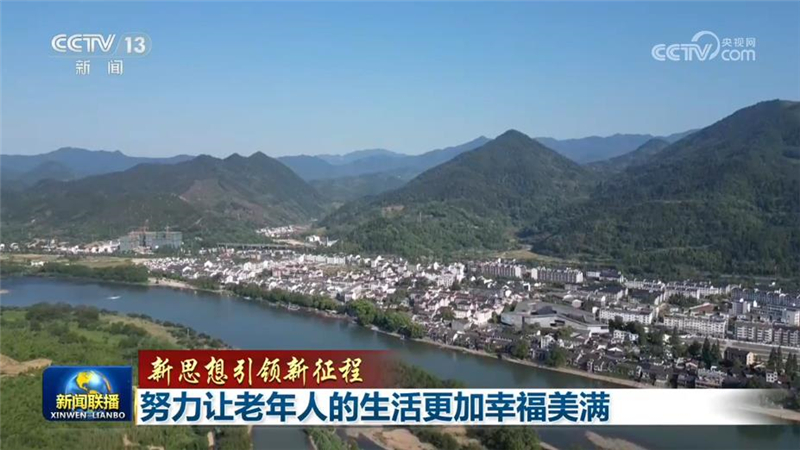
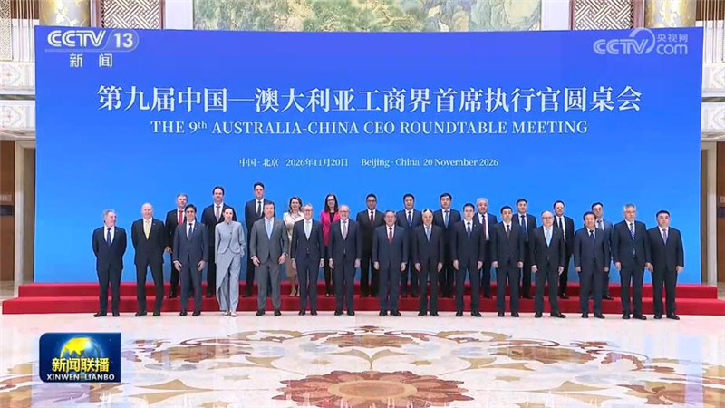
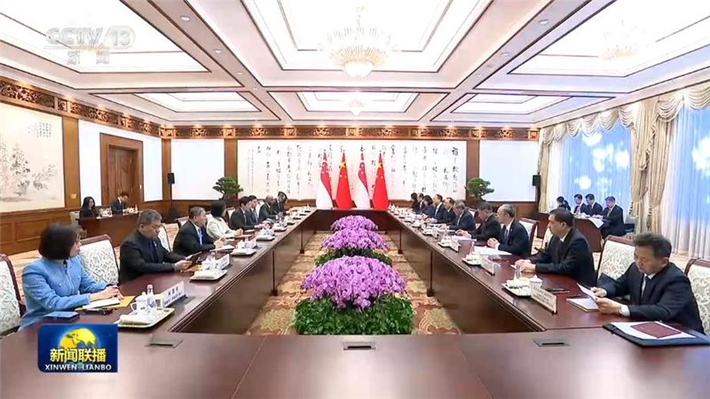
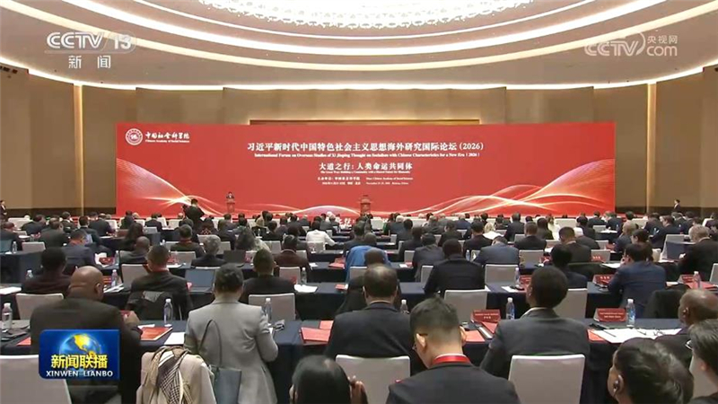
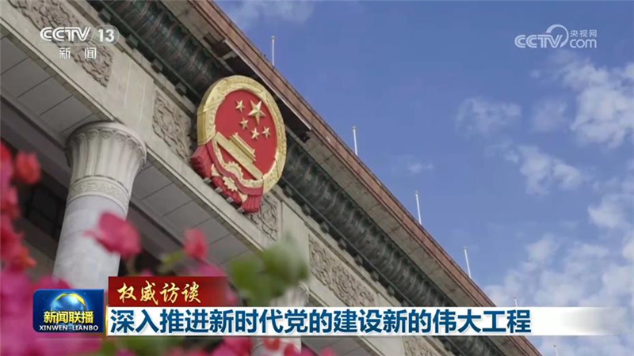
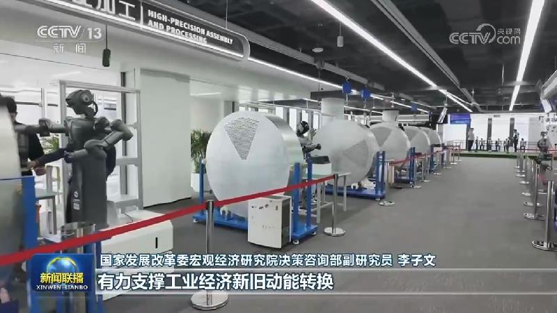
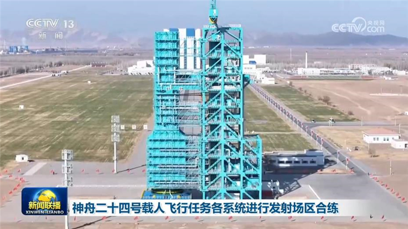
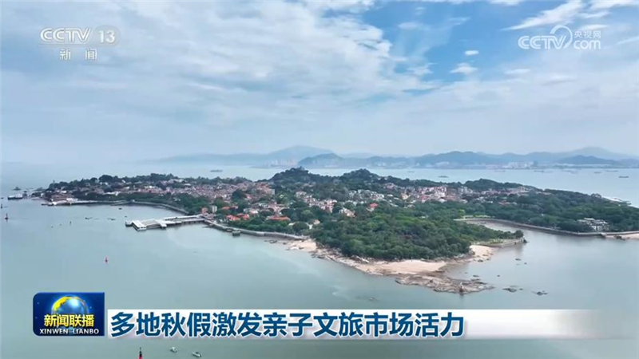
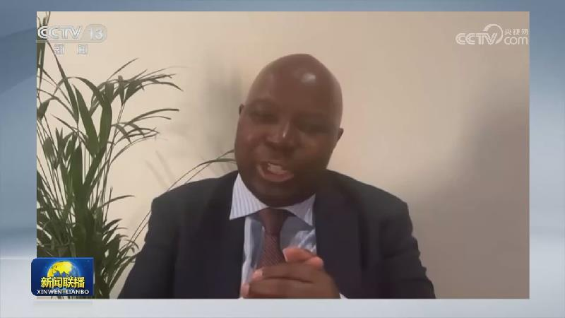
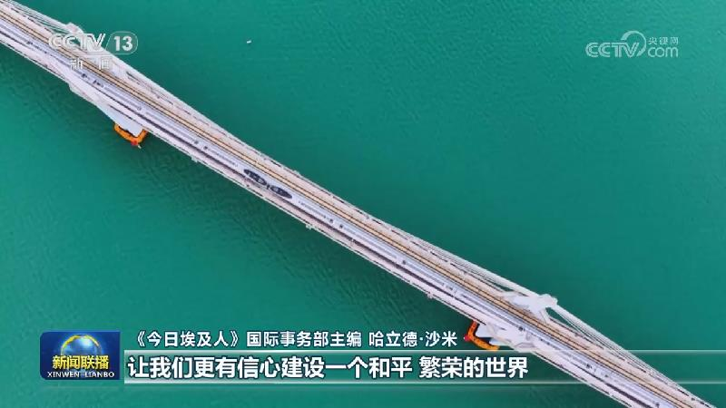

01

【新思想引领新征程】努力让老年人的生活更加幸福美满
习近平总书记指出，我国已经进入老龄社会，让老年人老有所养、生活幸福、健康长寿是我们的共同愿望。在习近平总书记引领推动下，我国实施积极应对人口老龄化国家战略，老龄工作取得显著成效，养老事业和养老产业协同发展，托举起亿万老年人的幸福“夕阳红”。


习近平总书记指出，我国已经进入老龄社会，让老年人老有所养、生活幸福、健康长寿是我们的共同愿望。在习近平总书记引领推动下，我国实施积极应对人口老龄化国家战略，老龄工作取得显著成效，养老事业和养老产业协同发展，托举起亿万老年人的幸福“夕阳红”。

国务院总理李强20日晚在北京钓鱼台国宾馆同澳大利亚总理阿尔巴尼斯共同出席第九届中澳工商界首席执行官圆桌会，近30位中澳商会和企业负责人出席。

国务院总理李强21日上午在北京钓鱼台国宾馆同新加坡总理黄循财举行会谈。李强表示，在双方共同努力下，中新关系保持良好发展势头，互利合作成果丰硕。昨天，习近平主席同总理先生举行会晤，就深化两国关系作出进一步规划。中方愿同新方加强战略沟通，筑牢政治互信基础，拓展务实合作，推动中新全方位高质量的前瞻性伙伴关系取得更多成果，持续增进两国民众福祉。

习近平新时代中国特色社会主义思想海外研究国际论坛（2026）21日在北京开幕。

党的二十届五中全会系统擘画了新征程持之以恒推进全面从严治党的战略任务。从今天（11月21日）起，《新闻联播》推出《权威访谈》系列报道，深入解读全会《决定》，首先关注党的二十届五中全会的重大意义。

10月份，我国工业生产总体平稳，新动能支撑有力，工业经济持续向新向优向好发展。

神舟二十四号船箭组合体于本月17日转运至发射区，计划于近日择机发射。今天（11月21日），发射场区组织各单位展开全系统合练。

眼下，全国多地中小学迎来秋假。各地依托秋日特色，将课堂延伸至田间地头与科技场馆，让秋假成为学生快乐成长的“行走课堂”，也为秋季文旅市场注入强劲活力。
我国“5G+工业互联网”项目达2.7万个

国际人士表示，习近平主席在亚太经合组织工商领导人峰会上的主旨演讲以及在亚太经合组织第三十三次领导人非正式会议上的重要讲话，为推动亚太合作行稳致远指明了方向，不仅对亚太共同体建设有重大意义，也将对全球发展产生深远影响。

国际人士表示，中俄美元首会晤释放了坚持对话、管控分歧的信号，凝聚起共同建设更美好世界的共识与信心。
俄外交部称将持续揭露日本二战时期罪行